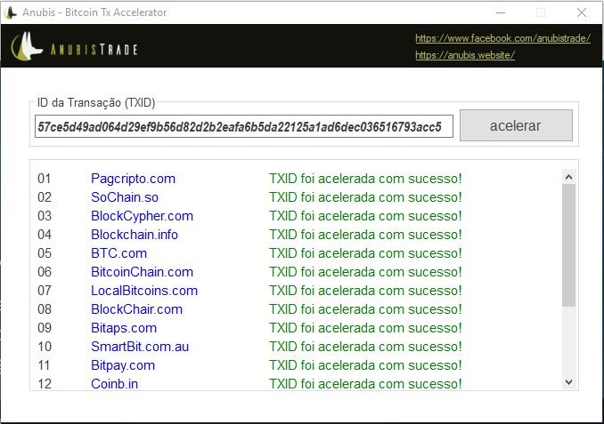

Acelere suas transações agora:
O que é?
Nós do AnubisTrade criamos um acelerador de transações totalmente gratuito e open source, que permite obter confirmações mais rápidas de transações ainda não confirmadas.
Como Funciona?
Para começar, basta digitar acima a sua ID (TXID) e clicar em "Acelerar". Após o pedido tentaremos
notificar mais de 9 sites para tentar acelerar a sua transação. Não garantimos que a transação será
acelerada;
Divulgue e acesse a plataforma AnubisTrade